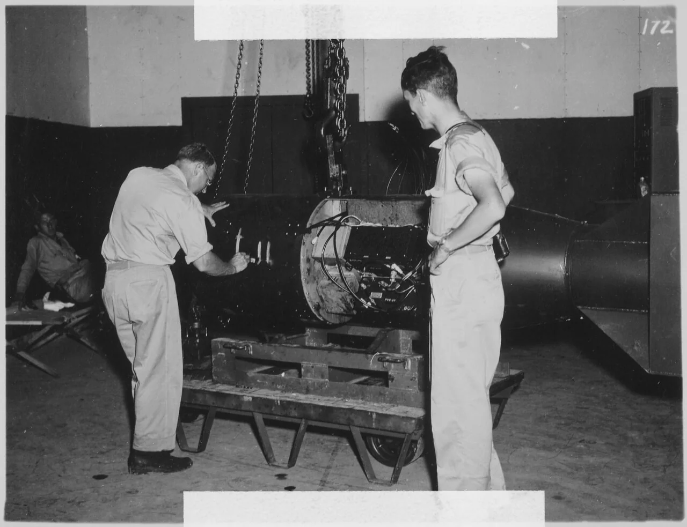
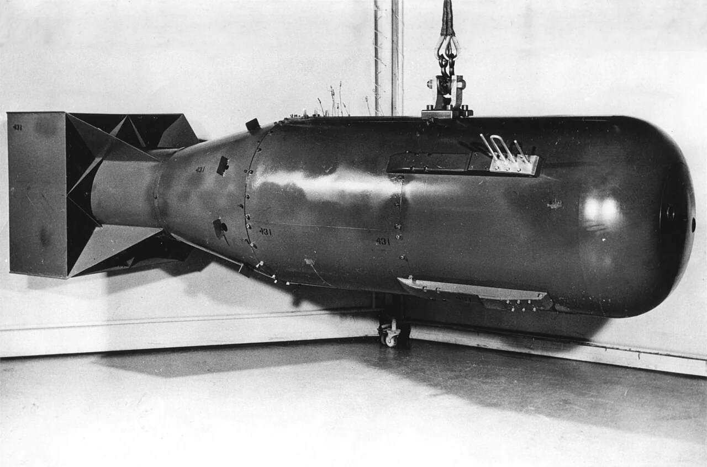
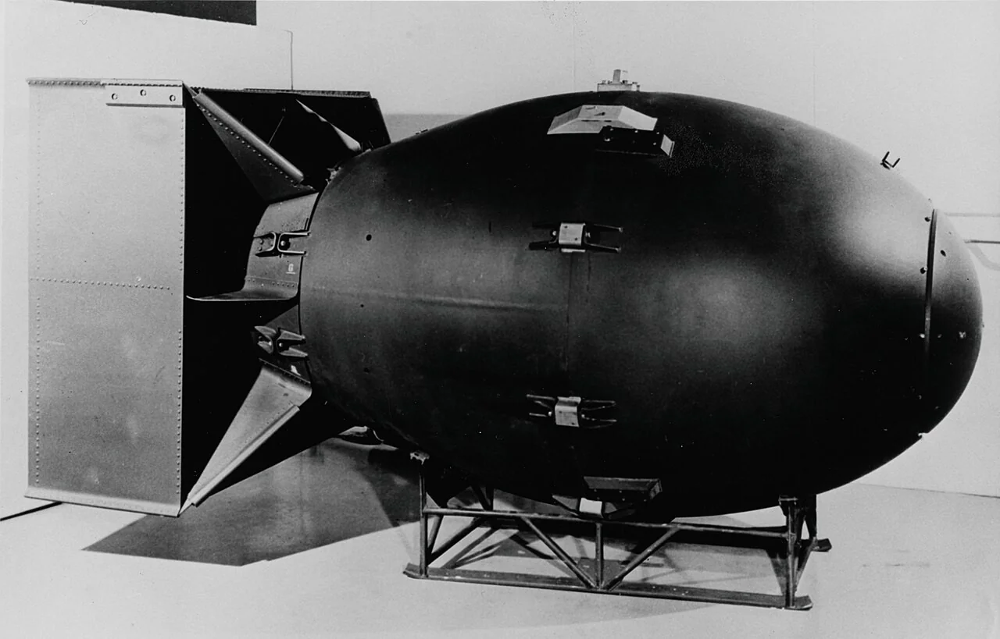
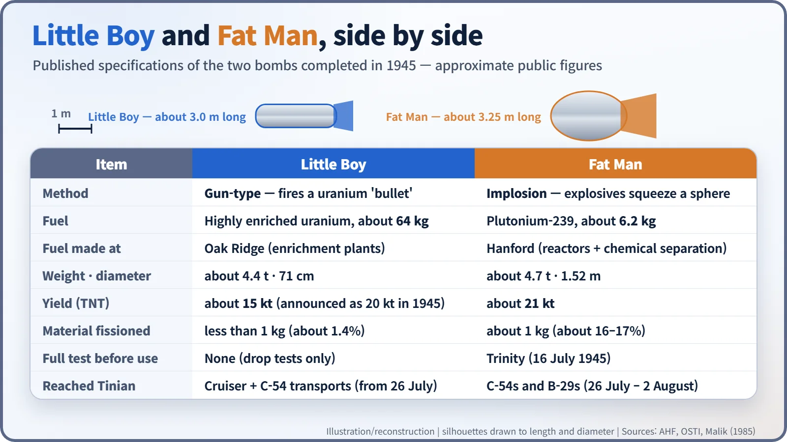
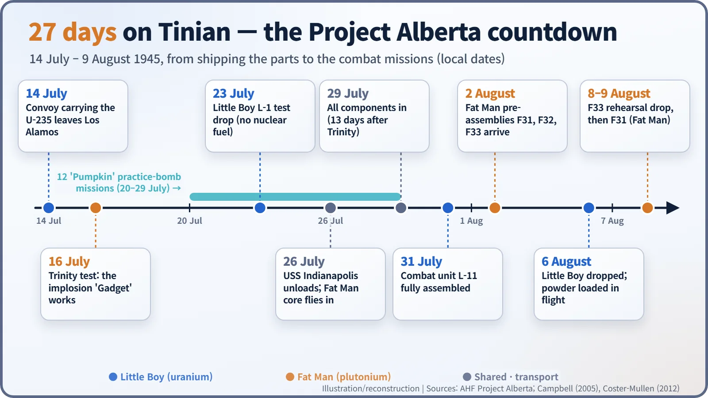
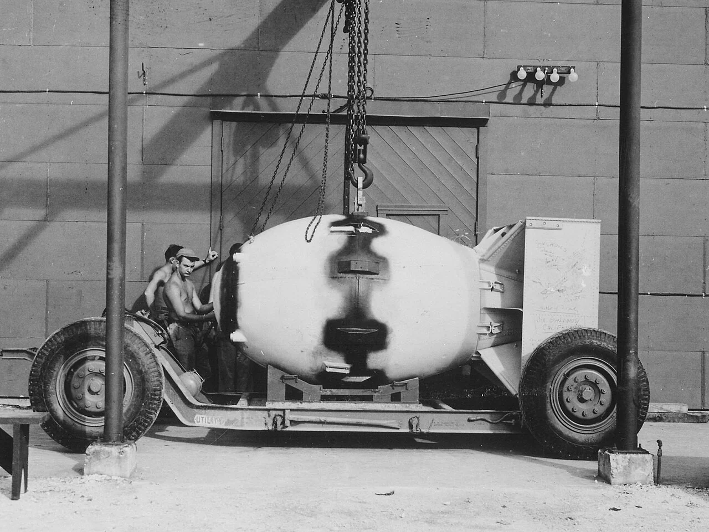

Nuclear History · 109
The Long Boy and the Fat Man — Why Little Boy and Fat Man Were Built So Differently
One was a simple uranium gun that was never fully tested, the other a complex plutonium implosion device ten times as efficient, and both were put together on a Pacific island in 27 days.
In the summer of 1945 two very different atomic bombs were assembled on the Pacific island of Tinian: Little Boy, a simple uranium "gun", and Fat Man, a complex plutonium implosion device. Set side by side, their shapes, fuels, efficiency and even the way they were loaded all trace back to the physics of their two fuels. The work of putting them together fell to a small team called Project Alberta.
A number written on a casing
There is a photograph taken on Tinian, an island in the Marianas, at the end of July or the start of August 1945. Inside an air-conditioned assembly building, a bespectacled Navy commander is writing something on a dark steel casing. The mark is "L-11". The man is A. Francis Birch (1903–1992), numbering the Little Boy unit that was about to be used in combat. Other numbers in the same series, L-1, L-2, L-5 and L-6, had been dropped into the sea without nuclear fuel as test units. [3] [6]

At that moment, two bombs were coming together on the same island. They differed in shape, in fuel and in the way they worked. This post sets them side by side.
Two brothers from very different starting points
The original plan was to build both as gun-type weapons. A gun-type bomb is, quite literally, a gun: the fissile material is kept in two pieces, and a propellant charge fires one piece into the other so that the assembly passes "criticality" (the point where a chain reaction sustains itself) in an instant. In 1944, however, it became clear that reactor-made plutonium would start reacting far too early in such a slow assembly. That story belongs to the plutonium crisis; the result was a split. Uranium went into the simple, dependable gun design. Plutonium went into the much harder implosion design.
In an implosion weapon a sphere of plutonium is surrounded by high explosives that are fired from the outside at the same moment, squeezing the core inward. Think of pressing a snowball from every side at once. If one hand pushes late, the ball goes lopsided, so dozens of explosive blocks had to detonate almost simultaneously. [1]


The numbers, side by side
Even the names came from the shapes. Physicist Robert Serber (1909–1997) recalled calling the long design "Thin Man", after the detective story, and the round one "Fat Man", after Sydney Greenstreet's character in The Maltese Falcon. When the Thin Man was shortened, it became "Little Boy". A story that the names stood for Roosevelt and Churchill also circulates, but the more likely explanation is that this was a cover story used on the telephone for security. [5]

Little Boy was about 3.0 m long, weighed about 4.4 tonnes and carried about 64 kg of highly enriched uranium. Fat Man was a bigger body, about 3.25 m long and 1.52 m across, yet its fuel was only about 6.2 kg of plutonium, roughly the size of a softball. Its weight is usually given as about 4.7 tonnes, although some sources say 4.9. [2]
The most striking difference is efficiency. Less than 1 kg of Little Boy's uranium actually fissioned, about 1.4% of the total. In Fat Man about 1 kg fissioned, some 16–17% of the plutonium, making it roughly ten times as efficient. The yields were about 15 kilotons of TNT for Little Boy and about 21 kilotons for Fat Man. Little Boy's yield was announced as 20 kilotons in 1945; a 1985 Los Alamos reassessment revised it to about 15. [2] [4]
Little Boy was also never given a full-scale nuclear test. When its design was frozen in February 1945, planners judged that such a simple device did not need one, and there was no spare uranium to use up in a test. The far more complex implosion design did need proof, which is why the Trinity test took place on 16 July 1945. Still, the popular line that "Little Boy was never tested" is only half true: drop tests with no nuclear fuel checked the casing and fuzing many times. [1]
Project Alberta: 27 days on Tinian
Turning both designs into usable weapons was the job of Project Alberta, set up at Los Alamos in March 1945. It was led by Navy Captain William S. Parsons (1901–1953), with Norman Ramsey (1915–2011) as scientific and technical deputy. Fifty-one people went out to Tinian. [3]

On 14 July the uranium for Little Boy left Los Alamos. On 26 July the cruiser USS Indianapolis unloaded the bomb body and the uranium projectile on Tinian; the ship was sunk by a Japanese submarine a few days later. The uranium target pieces and Fat Man's plutonium core arrived by C-54 transport aircraft. By 29 July, thirteen days after Trinity, every component had arrived, and unit L-11 was fully assembled on 31 July. Three Fat Man pre-assemblies arrived on 2 August. [3] [6]

The difference in character showed right up to the last moment. After several B-29s crashed and burned on take-off, Parsons decided to load Little Boy's propellant only after the aircraft was airborne. Because it was a gun design, he only had to insert the powder bags. On 6 August he and a colleague did this in flight, a job that took about 25 minutes. Fat Man, built around a precise explosive assembly, is generally described as too complex to assemble in flight, so it was loaded complete. [6]
What came after
After the war, most of the American stockpile was of the Fat Man type: about 120 were built between 1947 and 1949. By the end of 1950 only five Little Boy-type assemblies existed, and they were all retired. Implosion, which got far more yield out of the same fissile material, became the mainstream of later weapon design. The assembly and preparation that took weeks on Tinian was standardized after the war at two days. [3] [6]
Trace the two bombs' very different shapes back to their roots and you reach the physics of their fuels. Oak Ridge's huge enrichment plants and Hanford's reactors made two different fuels by two different routes, and each fuel demanded its own kind of bomb. How the two bombs were used, and the damage and debates they left behind, are the subject of the posts that follow.